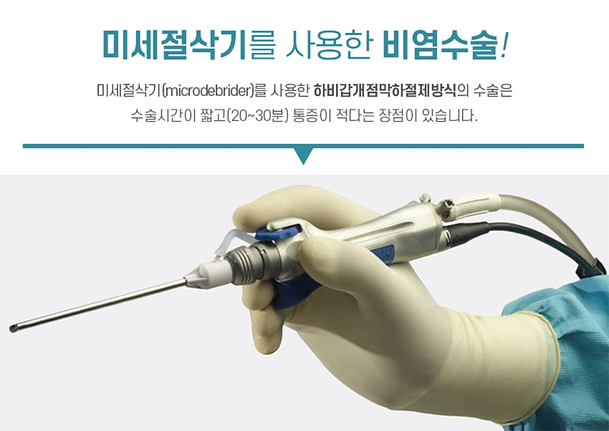
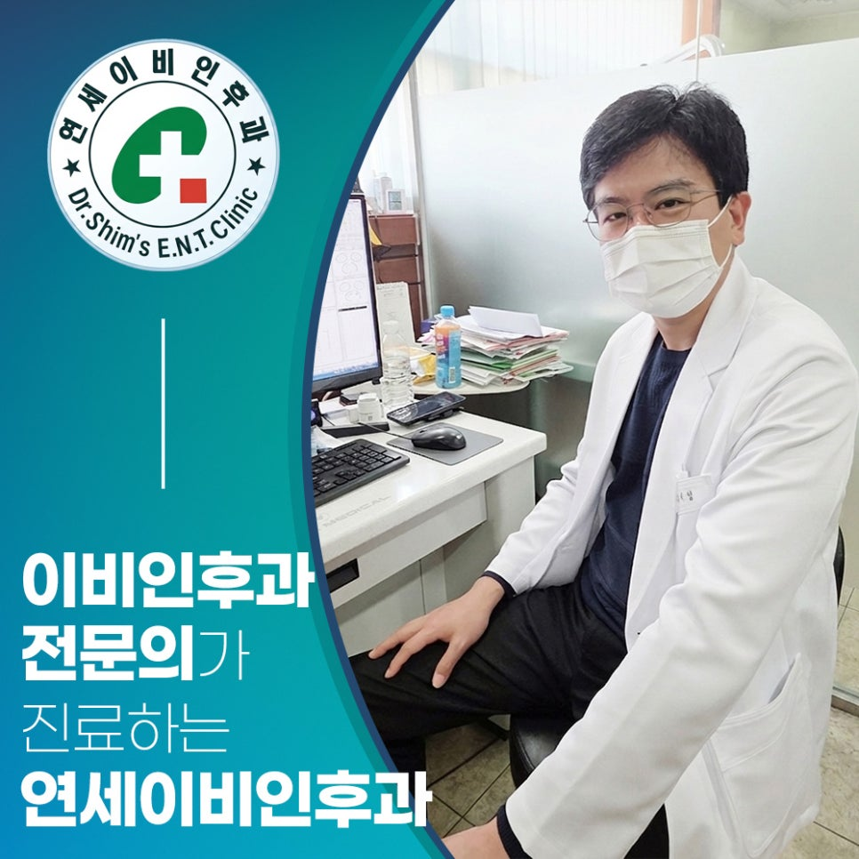

수원 이비인후과 연세이비인후과의원은 소아부터 성인까지 귀·코·목 질환의 근본적인 원인을 정확하게 진단합니다. 만성적인 비염 환자를 위해 미세절삭기를 이용한 하비갑개 점막하 절제수술 및 Full-HD 내시경 축농증 수술을 통해 안전하고 재발 없는 치료를 약속드립니다.

단순히 콧살 표면을 태우는 과거의 레이저 수술이나 재발이 빈번한 고주파 비염수술과 달리, 미세절삭기(microdebrider)를 사용하여 비대해진 하비갑개 점막하 조직(뼈와 점막 사이)을 정밀하게 제거하는 수술입니다. 코막힘의 근본 원인을 해결하며, 정상 점막의 손상을 최소화하여 후유증과 재발률을 획기적으로 낮춥니다.
수술 대상
약물 치료로 호전되지 않는 만성 비후성 비염 및 심한 코막힘 환자
핵심 장점
국소 마취 후 10~15분 소요, 당일 퇴원 가능, 출혈 및 통증의 대폭 감소
만성 부비동염(축농증)의 확실한 치료를 위해 Full-HD 미세 내시경을 코안으로 삽입하여 병변을 실시간으로 직접 관찰하며 진행합니다. 부비동 내부의 염증성 비용종(코버섯)을 정밀 셰이버로 안전하게 제거하고, 막혀 있던 부비동 자연 환기구(Ostium)를 넓혀주어 정상적인 환기 및 배설 기능을 복원시킵니다.
수술 대상
3개월 이상의 약물 및 보존적 치료에 반응하지 않는 만성 부비동염
핵심 장점
외부 흉터 전혀 없음, 미세절삭기를 통한 안전한 염증 병변 타겟 제거
성인에 비해 귀와 코를 연결하는 이관이 짧고 평평한 소아들의 신체적 특성을 고려합니다. 잦은 중이염, 소아 비염, 아데노이드 비대증 등 아이들의 성장을 저해하는 이비인후과 질환을 무리한 약물 오남용 없이 정직하고 부드럽게 치료합니다.
주요 진료
소아 삼출성 중이염, 설소대 단축증 수술, 영유아 감기 클리닉
진료 철학
아이들이 무서워하지 않는 편안한 진료 환경 및 섬세한 문진
알레르기성 비염, 부비동염(축농증), 비중격만곡증, 비출혈(코피), 코골이, 수면무호흡, 후각장애
급만성 중이염, 외이도염, 이명, 고막천공, 난청, 청력 검사, 어지럼증, 보청기
편도선염, 인후두염, 구내염, 역류성 후두염, 목 이물감, 성대 및 음성질환
급만성 중이염, 소아부비동염, 소아 알레르기, 소아 비염, 편도 질환, 아데노이드 질환
만성 피로, 심한 몸살감기 회복 수액, 면역력 강화 영양 주사 (쾌적한 침대형 수액실)
독감(인플루엔자), 폐렴구균, 대상포진 등 국가 필수 및 일반 예방접종 클리닉
진료 요일

진료 요일
연세이비인후과의원
경기 수원시 장안구 파장로 82번길 6
상담문의: 031-244-8001
무료 주차 지원
원내 내원 시 수납 데스크에 차량 번호 등록
북수원시장입구
하차 후 정류장 바로 앞
효자문사거리·북수원자이렉스비아 정문
하차 후 우측 골목으로 도보 1분